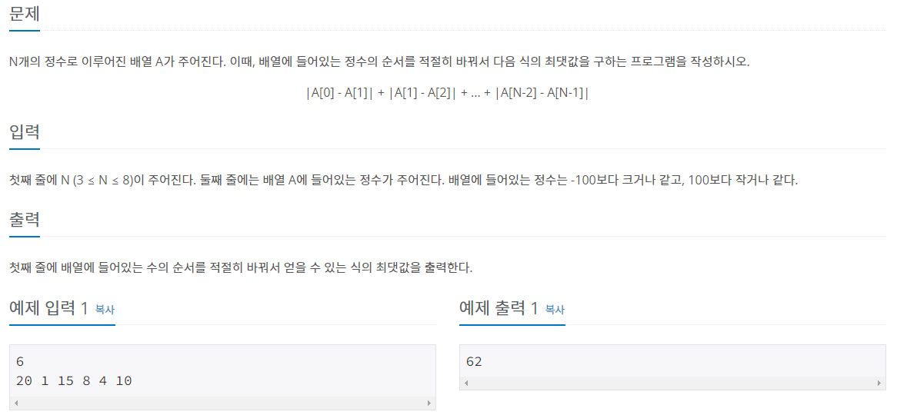

#INFO
난이도 : SILVER2
문제 유형 : 완전탐색
출처 : 10819번: 차이를 최대로 (acmicpc.net)

#SOLVE
C++ STL <algorithm>에 정의된 next_permutation 함수를 사용해 만들어질 수 있는 모든 조합의 경우의 수를 구한 뒤 문제에서 주어진 식의 최댓값을 구하는 완전탐색(브루트포스) 방식으로 문제를 풀이하였다.
단, 주의해야할 점은 배열을 조합으로 돌리기 이전에 정렬을 해야 한다는 것이다. 이는 next_permutation 함수의 이전 크기의 순열의 조합은 탐색하지 않는다는 성질 때문에 그렇다. about next_permutation
따라서 <algorithm>의 sort 함수를 이용해 미리 배열(벡터)을 오름차 정렬 해 주었다.
int n;
cin >> n;
vector<int> v(n);
for(int i = 0; i < n; ++i)
cin >> v[i];
sort(v.begin(), v.end());#CODE
#include <iostream>
#include <stdlib.h> // abs()
#include <vector>
#include <algorithm> // next_permutation & sort
using namespace std;
int main(){
int n;
cin >> n;
vector<int> v(n);
for(int i = 0; i < n; ++i)
cin >> v[i];
sort(v.begin(), v.end());
int max_value = -1;
do{
int sum = 0;
for(int i = 1; i < n; ++i){
sum += abs(v[i] - v[i-1]);
}
max_value = max(max_value, sum);
}while(next_permutation(v.begin(), v.end()));
cout << max_value << '\n';
return 0;
}